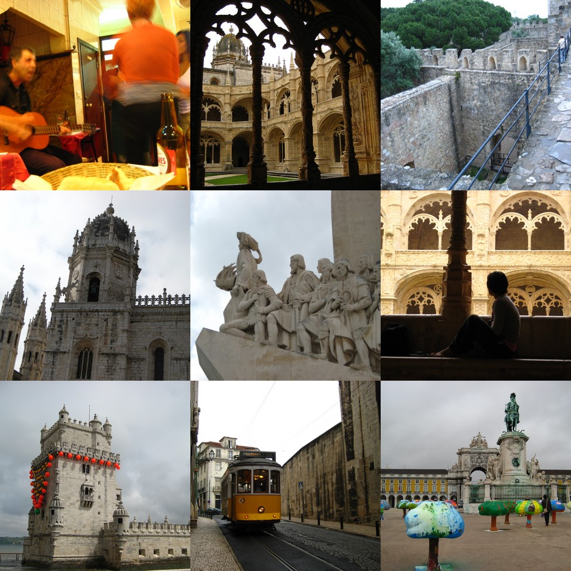

So 2 days after I got back from Evry & Paris France, I went to Portugal and Spain. I think I went to Lisboa, Porto, Madrid, San Sebastian & Bilbao in 6 days..or something equally idiotic.
I was crazily booking hostels, researching things to see, booking tickets (try reading train & bus websites in portugese..grrr), google maps to locate everything..
Anyway, Lisboa’s Belem Tower was pretty cool – it was a sentry point for the entry into the port and sits right on the edge of the beach. Lisbon also has the exact copy of the Golden Gate Bridge (san francisco). Geromino Monastery was amazing, just really serene. I sat there until they chased me (closing time) and just watched the rain.Got some Portugese egg tarts (called pastels there) that melt in the mouth – you have to eat them with icing sugar and cinnamon provided, sprinkled on top – that I found out AFTER I ate my egg tarts. Bummer.
Dodged trams, walked up to the tallest point in the city (Sao Jorge castle), got lost walking around the old battlements back down to the city, found a little cafeteria where the waiter played the guitar and everyone got up to dance. Got lost again taking the metro back to the hostel.. then the next day at some point took a really fast train to porto.
Porto is a really old city, lots of gorgeous plazas and public buildings but the most stunning is the river foreshore and the tall tall bridge that links Porto to Vila Nova. This iron bridge is eye-wateringly high, you can walk across it or take the tram – and the railing is still only waist high (to a tall guy). Lots of sitting on the grass, having some sun by the river..
Portugal has the funkiest hostels, they are more like boutique hotels, lounges, cardboard moose heads on the walls, chandeliers, shag carpets, spray grafitti on the walls. It’s only when you get back to the room you are sharing with 7 others that you realise it’s a hostel.
Next email..Spain 
Shi
